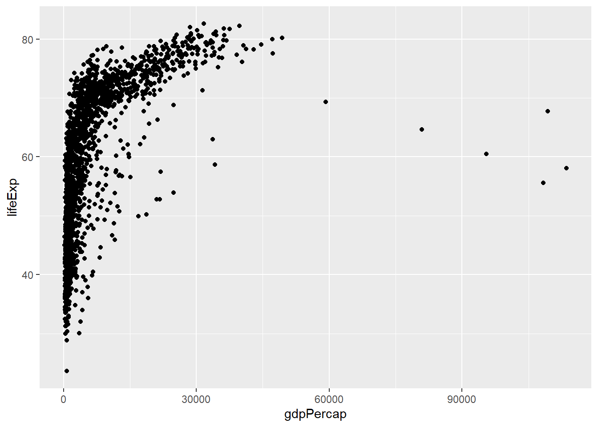

VISUALISASI DATA NUMERIK
Patricia Pingkan Kumenap
2025-03-16
0.1 HISTOGRAM
Untuk membuat histogram, data yang dipilih adalah data “gapminder”. Data ini merupakan bagian dari dataset yang bersumber dari packages R Studio dengan judul Packages “gapminder”. Untuk itu terlebih dahulu melakukan install.packages “gapminder” pada R Studio. Secara keseluruhan dataset gapminder ini membahas mengenai informasi tentang perkembangan ekonomi dan kesehatan dari berbagai negara di dunia selama beberapa dekade. Packages Dataset ini pertama kali dibuat oleh Jenny Bryan. Sumber data aslinya dikumpulkan oleh Gapminder Foundation. Dataset “gapminder” ini juga terdiri dari 6 variabel utama yang meliputi : - variabel country dengan tipe data faktor - variabel continent dengan tipe data faktor - variabel year dengan tipe data integer - variabel lifeExp dengan tipe data numerik - variabel pop dengan tipe data numerik - variabel gdpPercap dengan tipe data numerik
Untuk membuat histogram pada package {ggplot2} menggunakan perintah
geom_histogram(). Variable yang digunakan yaitu lifeExp
pada data gapminder.
## Warning: package 'gapminder' was built under R version 4.3.3## Warning: package 'ggplot2' was built under R version 4.3.2## `stat_bin()` using `bins = 30`. Pick better value with `binwidth`.
Secara defaut, geom_histogram() menggunakan 30 bins
(batang). Selanjutnya mengganti nilai bins tersebut dengan menambahkan
argumen bins = 50. Hasilnya sebagai berikut.
Kita dapat memberikan pemisah dengan warna putih Anda dapat tambahkan
argumen color = "yellow". Hasilnya sebagai berikut.
Kita dapat mengubah warna batang dengan menggunakan argumen
fill, mengubah format penulisan nilai pada sumbu x dan y
menggunakan function scale_x_continuous() untuk sumbu x dan
scale_y_continuous() untuk sumbu y dan mengubah nama label
pada sumbu x dan y dengan fungsi labs. Hasilnya sebagai
berikut.
## Warning: package 'scales' was built under R version 4.3.20.2 DENSITY PLOT SEDERHANA
Pada dasarnya density tidak bisa melihat outlier, untuk itu identifikasi outlier dapat menggunakan histogram dan Untuk membuat density plot menggunakan ggplot2 kita cukup menggunakan function geom_density()

Untuk mengatur warna, transaparansi, format penulisan nilai pada sumbu x dan y, dan labeling sumbu x sama seperti pembuatan Histogram. Hasilnya sebagai berikut.
ggplot(data = gapminder, mapping = aes(x = lifeExp)) +
geom_density(fill = "pink", alpha = 0.9) +
scale_x_continuous(labels = comma) +
scale_y_continuous(labels = comma) +
labs(x = "Rata-rata harapan hidup saat lahir (dalam tahun)")
Kita dapat membandingkan sebaran menggunakan density plot berdasarkan kategori. Misal akan dilihat sebaran rata-rata hidup saat lahir berdasarkan kategori continent. Hasilnya sebagai berikut.
library(ggplot2)
library(scales)
ggplot(data = gapminder, mapping = aes(x = lifeExp, fill = continent)) +
geom_density(alpha = 0.7, color="black") +
scale_x_continuous(labels = comma) +
scale_y_continuous(labels = comma) +
labs(
title = "Distribusi Rata-rata harapan hidup saat lahir (dalam tahun) berdasarkan Negara",
x = "Rata-rata harapan hidup saat lahir (dalam tahun)",
y = "Density") +
theme_minimal()Untuk mengurangi kesulitan dalam mengamati visual tersebut maka perlu dipisah per kategori dengan menggunakan visualisasi ridgeline plot atau disebut juga joyplot.
## Warning: package 'ggridges' was built under R version 4.3.3ggplot(data = gapminder, mapping = aes(x = lifeExp, y=continent,fill = continent)) +
geom_density_ridges() +
labs(x = "Rata-rata harapan hidup saat lahir (dalam tahun)", y = "Kategori continent")## Picking joint bandwidth of 2.230.3 BOXPLOT
Untuk membuat boxplot di ggplot2 kita dapat gunakan
function geom_boxplot()

Membuat boxplot secara vertikal menggunakan perintah
coord_flip(). Hasilnya sebagai berikut.
kita dapat membuat boxplot dari data numerik dan membandingkan sebarannya berdasarkan kategori. Misalnya kita ingin membandingkan sebaran rata rata hidup saat lahir berdasarkan kategori kelas continent nya Hasilnya sebagai berikut.
 semakin panjang maka akan semakin beragam variasinya Selanjutnya memberi
warna berbeda untuk setiap box berdasarkan kategorinya. Kita dapat
menambahkan argumen
semakin panjang maka akan semakin beragam variasinya Selanjutnya memberi
warna berbeda untuk setiap box berdasarkan kategorinya. Kita dapat
menambahkan argumen fill dengan nilai berupa nama variabel
dari kategori yang ingin kita gunakan untuk perbandingan boxplot.
Misalnya kita ingin membandingkan sebaran dari rata rata hidup saat
lahir (lifeExp) berdasarkan kategori continent menggunakan
boxplot dan menyesuaikan warnanya berdasarkan kategori
dari color. Hasilnya sebagai berikut.
ggplot(data = gapminder, mapping = aes(x = lifeExp, y = continent, fill = continent)) +
geom_boxplot()Untuk menghilangkan legend dari color kita dapat tambahkan theme(legend.position = “none”).Hasilnya sebagai berikut.
ggplot(data = gapminder, mapping = aes(x = lifeExp, y = continent, fill = continent)) +
geom_boxplot() +
theme(legend.position = "none")
0.4 VIOLIN PLOT
Plot ini dibentuk dengan menggabungkan antara Density Plot dengan boxplot. Hasilnya sebagai berikut.
ggplot(data = gapminder, mapping = aes(x = lifeExp ,y="all")) +
geom_violin(fill="green",alpha=0.6) +
geom_boxplot(fill="pink",width=0.3)+
scale_x_continuous(labels = comma) y=all : harus ada y nya
y=all : harus ada y nya
0.5 QQ-PLOT
Plot ini berguna untuk memeriksa apakah sebaran data (sebaran empirik) memiliki bentuk yang sama dengan sebaran tertentu yang dispesifikan (sebaran hipotetik). Misalnya kita ingin melihat pola sebaran rata-rata hidup saat lahir (lifeExp) apakah menyebar normal atau tidak.
ggplot(data = gapminder, aes(sample = lifeExp)) +
stat_qq(col="skyblue", cex=0.9) +
stat_qq_line(col="green", lwd=1) stat_qq_line : apakah menyebar normal atau tidak Jika datanya berhimpit
atau mengikuti garis maka akan menyerupai sebaran normal
stat_qq_line : apakah menyebar normal atau tidak Jika datanya berhimpit
atau mengikuti garis maka akan menyerupai sebaran normal
0.6 SCATTER PLOT
Untuk membuat scatter plot menggunakan ggplot2 kita
dapat menggunakan geom_point(). Misalnya kita ingin melihat
pola sebaran antara gdpPercap dengan lifeExp
 Kita juga dapat memberikan warna untuk setiap titik. Misalnya warna masing-masing titik menyesuaikan dengan kategori pada variabel continent
ggplot(data = gapminder, mapping = aes(x = gdpPercap, y = lifeExp, color = continent)) +
geom_point()
0.7 LINE CHART
Plot ini digunakan untuk melihat trend data berdasarkan perubahan waktu. Artinya pada Line Chart cocok untuk data-data deret waktu.
0.7.1 Input Data
Data yang digunakan yaitu data Pasar Saham Amerika Serikat dan Indikator Teknisnya.Adapun dataset ini bersumber dari website kaggle.
saham_AS <- read.csv("C:/Users/Fanndry/Documents/AAPL.csv",sep = ",")
saham_AS$Date <- as.Date(saham_AS$Date, format = "%Y-%m-%d")
head(saham_AS$Date)## [1] "2005-10-17" "2005-10-18" "2005-10-19" "2005-10-20" "2005-10-21"
## [6] "2005-10-24"## 'data.frame': 3732 obs. of 64 variables:
## $ Date : Date, format: "2005-10-17" "2005-10-18" ...
## $ Open : num 6.66 6.57 6.43 6.72 7.02 6.82 6.96 6.95 7.04 6.92 ...
## $ High : num 6.69 6.66 6.78 6.97 7.03 7.01 7.02 7.11 7.04 6.97 ...
## $ Low : num 6.5 6.44 6.32 6.71 6.83 6.8 6.87 6.9 6.84 6.69 ...
## $ Close.t. : num 6.6 6.45 6.78 6.93 6.87 7.01 6.93 7.04 6.84 6.72 ...
## $ Volume : int 154208600 152397000 252170800 339440500 199181500 152438300 116281900 157898300 102885300 192446800 ...
## $ SD20 : num 0.169 0.168 0.18 0.203 0.217 ...
## $ Upper_Band : num 6.83 6.82 6.86 6.93 6.97 ...
## $ Lower_Band : num 6.15 6.15 6.14 6.12 6.11 ...
## $ S_Close.t.1. : num 6.67 6.6 6.45 6.78 6.93 6.87 7.01 6.93 7.04 6.84 ...
## $ S_Close.t.2. : num 6.63 6.67 6.6 6.45 6.78 6.93 6.87 7.01 6.93 7.04 ...
## $ S_Close.t.3. : num 6.08 6.63 6.67 6.6 6.45 6.78 6.93 6.87 7.01 6.93 ...
## $ S_Close.t.5. : num 6.22 6.37 6.08 6.63 6.67 6.6 6.45 6.78 6.93 6.87 ...
## $ S_Open.t.1. : num 6.67 6.66 6.57 6.43 6.72 7.02 6.82 6.96 6.95 7.04 ...
## $ MA5 : num 6.47 6.49 6.63 6.69 6.73 ...
## $ MA10 : num 6.44 6.43 6.45 6.51 6.56 ...
## $ MA20 : num 6.49 6.48 6.5 6.53 6.54 ...
## $ MA50 : num 6.1 6.12 6.15 6.18 6.21 ...
## $ MA200 : num 5.15 5.16 5.17 5.19 5.2 ...
## $ EMA10 : num 6.52 6.5 6.59 6.71 6.76 ...
## $ EMA20 : num 6.52 6.5 6.59 6.71 6.76 ...
## $ EMA50 : num 6.52 6.5 6.59 6.71 6.76 ...
## $ EMA100 : num 6.52 6.5 6.59 6.71 6.76 ...
## $ EMA200 : num 6.52 6.5 6.59 6.71 6.76 ...
## $ MACD : num 0.108 0.0984 0.1161 0.1405 0.1533 ...
## $ MACD_EMA : num 0.126 0.121 0.12 0.124 0.13 ...
## $ ATR : num 0.227 0.226 0.243 0.244 0.241 ...
## $ ADX : num 25.3 23.9 22.6 22.2 22.1 ...
## $ CCI : num 1333 1333 1333 1333 1333 ...
## $ ROC : num -1.79 -2.86 3.99 8.62 8.53 ...
## $ RSI : num 56.8 52.5 59.7 62.5 60.7 ...
## $ William.R : num -25 -41.3 -5.43 -3.77 -14.29 ...
## $ SO.K : num 75 58.7 94.6 96.2 85.7 ...
## $ STD5 : num 0.0504 0.0521 0.047 0.0289 0.03 ...
## $ ForceIndex1 : num -10794602 -22859550 83216364 50916075 -11950890 ...
## $ ForceIndex20 : num 15420860 -18287640 88259780 176509060 59754450 ...
## $ Date_col : chr "2005-10-17" "2005-10-18" "2005-10-19" "2005-10-20" ...
## $ Day : int 17 18 19 20 21 24 25 26 27 28 ...
## $ DayofWeek : int 0 1 2 3 4 0 1 2 3 4 ...
## $ DayofYear : int 290 291 292 293 294 297 298 299 300 301 ...
## $ Week : int 42 42 42 42 42 43 43 43 43 43 ...
## $ Is_month_end : int 0 0 0 0 0 0 0 0 0 0 ...
## $ Is_month_start : int 0 0 0 0 0 0 0 0 0 0 ...
## $ Is_quarter_end : int 0 0 0 0 0 0 0 0 0 0 ...
## $ Is_quarter_start: int 0 0 0 0 0 0 0 0 0 0 ...
## $ Is_year_end : int 0 0 0 0 0 0 0 0 0 0 ...
## $ Is_year_start : int 0 0 0 0 0 0 0 0 0 0 ...
## $ Is_leap_year : int 0 0 0 0 0 0 0 0 0 0 ...
## $ Year : int 2005 2005 2005 2005 2005 2005 2005 2005 2005 2005 ...
## $ Month : int 10 10 10 10 10 10 10 10 10 10 ...
## $ QQQ_Close : num 33.6 33.4 34.1 33.8 34 ...
## $ QQQ.t.1. : num 33.5 33.6 33.4 34.1 33.8 ...
## $ QQQ.t.2. : num 33.3 33.5 33.6 33.4 34.1 ...
## $ QQQ.t.5. : num 33.6 33.4 33 33.3 33.5 ...
## $ QQQ_MA10 : num 33.7 33.6 33.6 33.6 33.6 ...
## $ QQQ_MA20 : num 34 34 34 33.9 33.9 ...
## $ QQQ_MA50 : num 34.3 34.2 34.2 34.2 34.2 ...
## $ SnP_Close : num 1190 1178 1196 1178 1180 ...
## $ SnP.t.1.. : num 1187 1190 1178 1196 1178 ...
## $ SnP.t.5. : num 1187 1185 1178 1177 1187 ...
## $ DJIA_Close : num 10348 10285 10414 10281 10215 ...
## $ DJIA.t.1.. : num 10287 10348 10285 10414 10281 ...
## $ DJIA.t.5. : num 10239 10253 10217 10217 10287 ...
## $ Close_forcast : num 6.45 6.78 6.93 6.87 7.01 6.93 7.04 6.84 6.72 7.11 ...0.7.2 Line chart Dasar
Di line chart sumbu x nya harus date
library(ggplot2)
ggplot(data = saham_AS, aes(x = Date, y = High)) +
geom_line() +
labs(
title = "Pergerakan Harga Tertinggi Saham",
x = "Tanggal",
y = "Harga Tertinggi") 
0.7.3 Area Plot
Untuk menambah estetika dapat dilakukan dengan mengarsir daerah di bawah plot deret waktu. Plot seperti ini disebut Area Plot. Hasilnya sebagai berikut.
ggplot(data = saham_AS, aes(x=Date,y=High)) +
geom_line(lwd=1.2, col="green") +
geom_area(fill="skyblue", alpha=0.3)
## $x
## [1] "tanggal"
##
## $y
## [1] "Harga Tertinggi"
##
## attr(,"class")
## [1] "labels"0.7.4 Multiple Line Chart
Pada plot ini dapat digunakan untuk membandingkan dan mengidentifikasi tren jangka pendek dan jangka panjang serta memberikan sinyal trading. MA50 merupakan rata-rata pergerakan harga saham selama 50 hari terakhir. Sedangkan MA200 merupakan pergerakan harga jangka panjang (lebih stabil dan menggambarkan tren keseluruhan).
ggplot(data = saham_AS, aes(x=Date)) +
geom_line(aes(y=MA50), lwd=1.2, col="blue") +
geom_line(aes(y=MA200), lwd=1.2, col="red") +
labs(x="tanggal", x="Perkiraan Rata-Rata Pergerakan Harga Saham") 
Untuk menambahkan nama kelompok digunakan perintah berikut.
library(ggplot2)
ggplot(data = saham_AS, aes(x = Date)) +
geom_line(aes(y = MA50), lwd = 1.2, col = "purple") +
geom_line(aes(y = MA200), lwd = 1.2, col = "blue") +
labs(
x = "Tanggal",
y = "Moving Average",
title = "Perbandingan MA50 dan MA200"
) +
theme_minimal() + # Tema lebih bersih
theme(
plot.title = element_text(hjust = 0.5), # Pusatkan judul
axis.text.x = element_text(angle = 45, hjust = 1), # Miringkan label sumbu X
plot.margin = margin(10, 20, 30, 10) # Tambahkan margin lebih besar
) +
coord_cartesian(clip = "off") + # Pastikan teks tidak terpotong
expand_limits(y = max(saham_AS$MA50, saham_AS$MA200) * 1.2) + # Tambah ruang lebih besar
annotate("text", x = max(saham_AS$Date), y = max(saham_AS$MA50) * 1.15,
label = "MA50", color = "purple", size = 5, fontface = "bold", hjust = -0.1) +
annotate("text", x = max(saham_AS$Date), y = max(saham_AS$MA200) * 1.15,
label = "MA200", color = "blue", size = 5, fontface = "bold", hjust = -0.1)